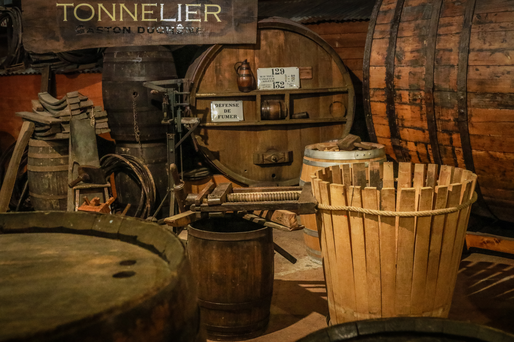
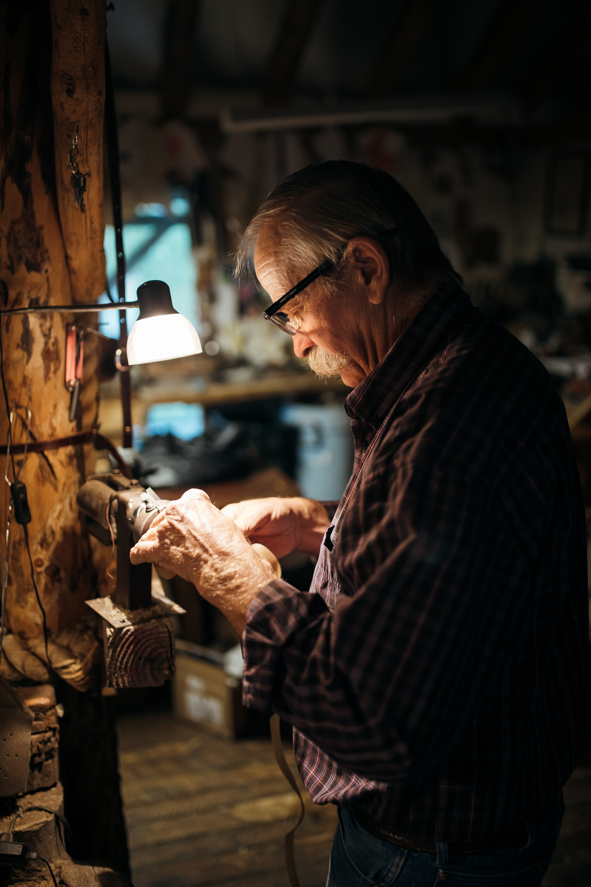

La ville de Reims est une ville extrêmement vivante et fière de son patrimoine. En tant que tel elle vous proposera de découvrir tout ce qui fait le charme de la Champagne et de vivre des expériences inoubliables. Vous avez toujours voulu partager la journée d’un vigneron? Vous voulez découvrir le savoir-faire d’un vrai tonnelier? Ou peut-être que parcourir les vignes pour récolter le raisin lors d’une belle journée vous intéresse?
N’attendez plus et venez vivre une de ces expériences rémoises!
Mais il n’y à pas que la ville de Reims qui vous propose de vivre des expériences inattendues et de découvrir le savoir faire des artisans de la région. La Marne tout entière regorge d'artisans talentueux ayant un vrai plaisir à vous faire découvrir leur travail. Que ce soit un Maître verrier, un tourneur sur bois ou une potière passionnée qui pourrait vous introduire à son monde, il est certain que vous trouverez de quoi émerveiller les petits mais aussi les plus grands.
Enfin peut être que vous êtes plus intéressé par une après midi shopping que par la découverte du métier d'artisan. Ici encore le savoir-faire à sa place. La champagne à du goût et propose un grand nombre de produits d'artisanat varié. Laissez vous guider par ici, vous ne le regretterez pas !
